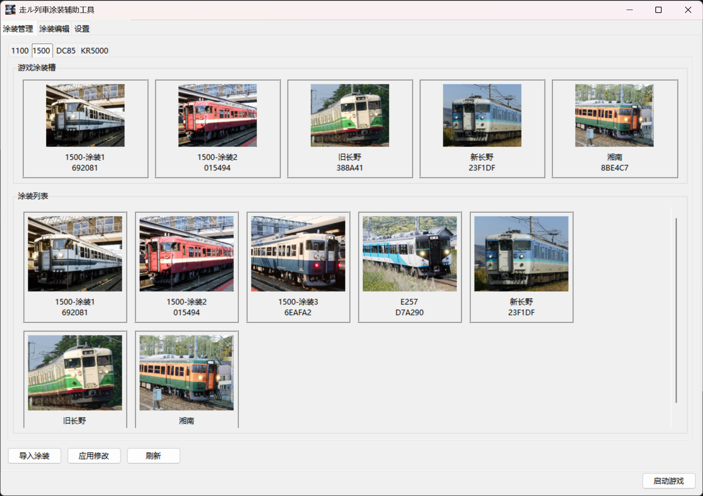
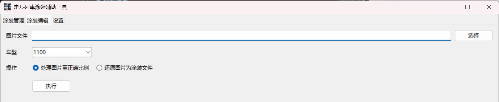
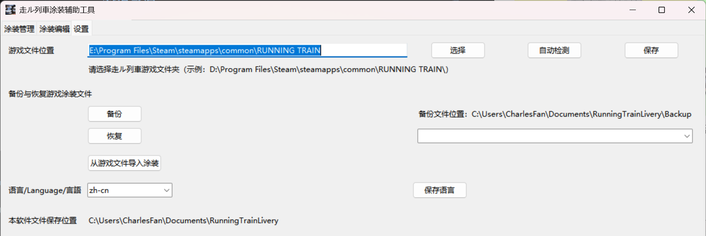
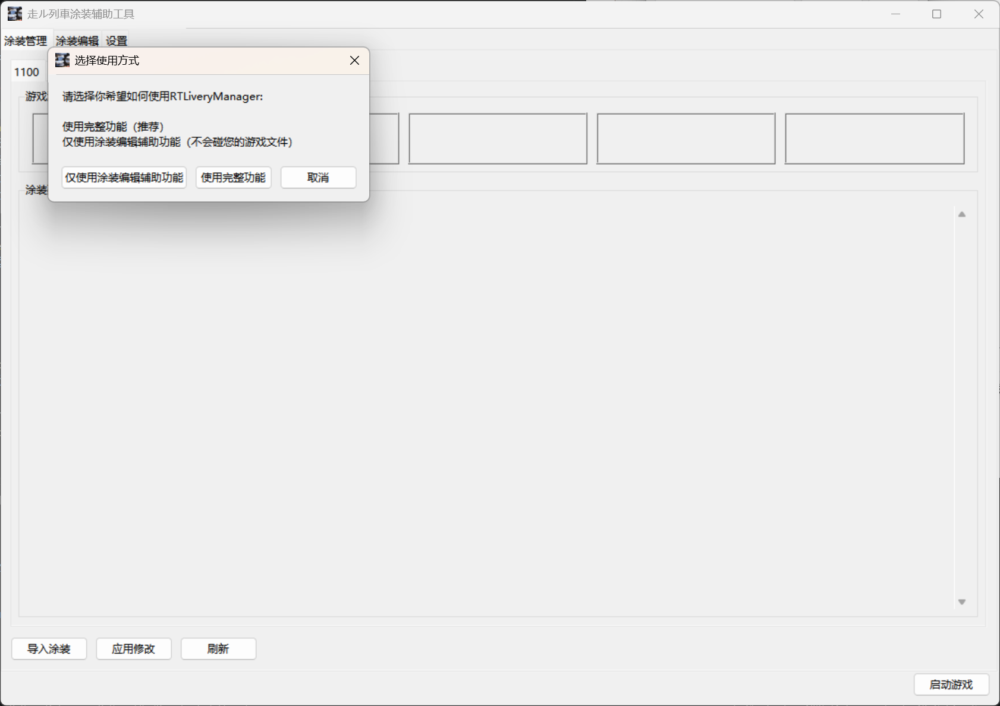
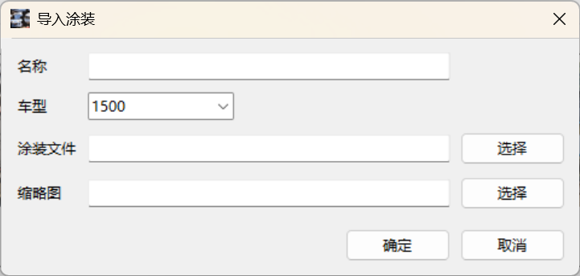
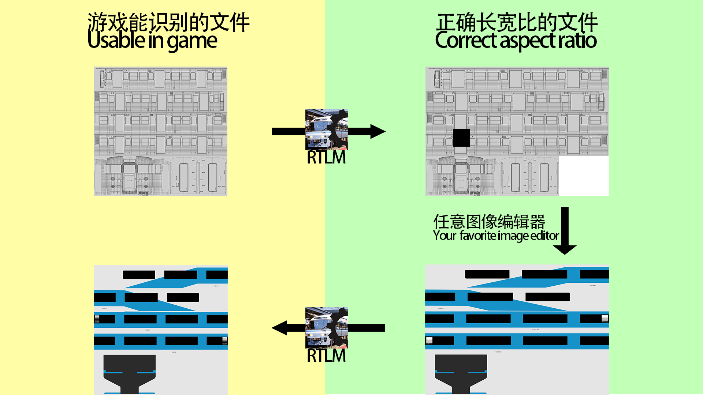

Livery Management
Build a livery library beyond the game's five-slot limit for each train type; import, export, edit, delete, and write selected liveries back to the game slots.
Available in English, Simplified Chinese, and Japanese. This livery manager for Running Train imports, exports, edits, deletes, and writes saved liveries back into game slots. It also fixes and restores image aspect ratios so your painting tools can work without distortion.
From your livery library to game slots and image editing helpers, common tasks live in one focused tool.

Build a livery library beyond the game's five-slot limit for each train type; import, export, edit, delete, and write selected liveries back to the game slots.

Convert the blank livery files provided by the game to the correct aspect ratio for editing, then restore them to the original game format.

Configure the game path on first launch, switch languages, back up or restore files, and manually import liveries from the game.
Configure the tool, import liveries, prepare images, and maintain settings in a simple sequence.

01 / Initial Setup
The app asks which mode you want to use. In full-feature mode, it detects the game files automatically and lets you set the path manually if needed.

02 / Import and Manage
Name, train type, and livery file are required; thumbnails are optional. After import, equip, remove, or right-click manage liveries from the main page.

03 / Editing Helper
The diagram shows how to convert game files to a usable aspect ratio, edit them elsewhere, and restore them as valid livery files.
04 / Maintain and Switch
The settings page manages the game path, backup and restore actions, manual import, and language switching.
For installers, source code, and full instructions, visit the GitHub repository.